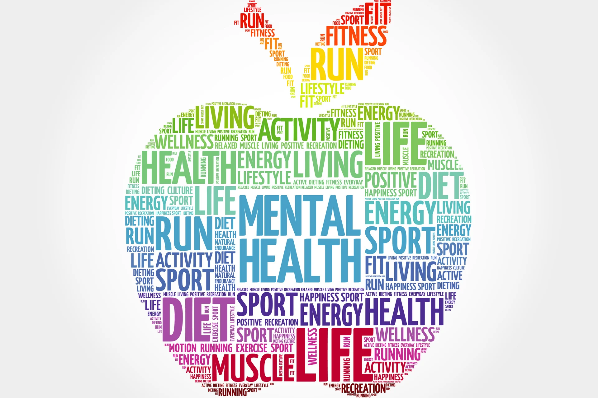

It's a BIG Deal
- There is both a notable variety and significance in presence of mental illnesses in society today,
including anxiety disorders such as phobias, panic attacks, mood disorders such as depression and bipolar
disorder, and more general disorders such as obsessive-compulsive disorders and eating disorders to name a few. (1)
- Particularly 1/5 Americans experiencing one of the above in a given year (2), and it is important for everyone
to be able to easily access information relating to mental health and illness.
-
Anxiety and stress are more prevalent now than ever, especially in the midst of the CODID-19 pandemic. While social distancing and
being mindfulness about contact with others is important, there are a plethora of resources online you can access right now. Remember -
social distancing does not mean social isolation.
- Our goal is to provide a simple, accessible questionnaire that can be used by anyone to generally
gauge their own mental health and have a way to learn more privately.
2. Key substance use and mental health indicators in the United States: Results from the 2015 National
Survey on Drug Use and Health. Rockville, MD: Center for Behavioral Health Statistics and Quality. Substance Abuse and Mental Health Services Administration. 2016.


Youtube!
National Suicide Prevention Hotline
Drug-Alcohol hotline
Depression Hotline
Donate